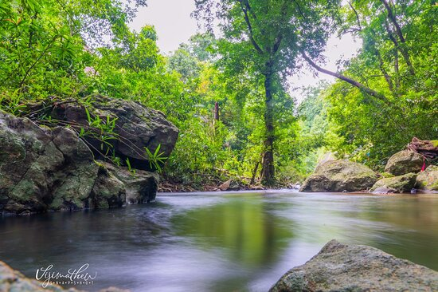

Pathanamthitta
A hilly province of pristine splendour, the district of Pathanamthitta is hailed as the headquarters of pilgrim worship in Kerala. Three rivers course through its prosperous terrains comprising natural divisions of the lowlands, the midlands and the highlands. Interspersed with temples, rivers, mountain ranges and coconut groves, more than fifty per cent of the total area of this region is covered by forests. Pathanamthitta has been dubbed a Heritage Village as it attracts visitors from all over the world for its spectacular water fiestas, religious shrines and cultural training centres. Pathanamthitta is also home to the unique AranmulaKannadi - metal mirrors that are meticulously handcrafted and the VasthuVidyaGurukulam, a village which practices the ancient Indian school of architecture.
TOURIST ATTRACTIONS

Gavi
Gavi is an Eco-Tourism a project of the Kerala Forest Development Corporation located in Pathanamthitta district, Kerala. Gavi, located in Pathanamthitta district offers its visitors activities like trekking, wildlife watching, outdoor camping in specially built tents, and night safaris.

Perunthenaruvi Waterfalls
A natural fall, down a rocky path into a ravine about 100 feet deep is the Perunthenaruvi Waterfalls. It is during monsoons that one can truly appreciate the roaring waters of Perunthenaruvi falls. The name of the place translates to ‘great honey stream’ and it has turned into a famous picnic spot in Pathanamthitta district. Distance from the nearest railway station – Thiruvalla is about 44 km.

Konni Forest Reserve
The Konni Forest reserves are a great place to spend a day with your family if you’re visiting Pathanamthitta, especially because it’s a very well-organised forest resort with excellent guides willing to take you around the place.